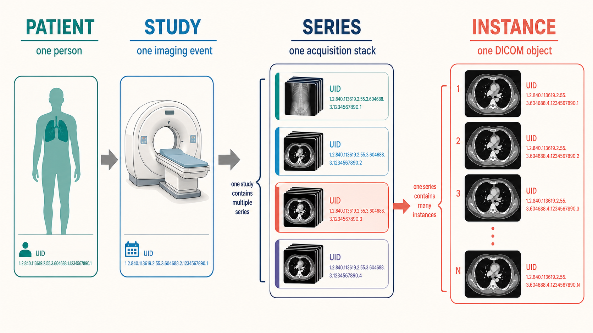
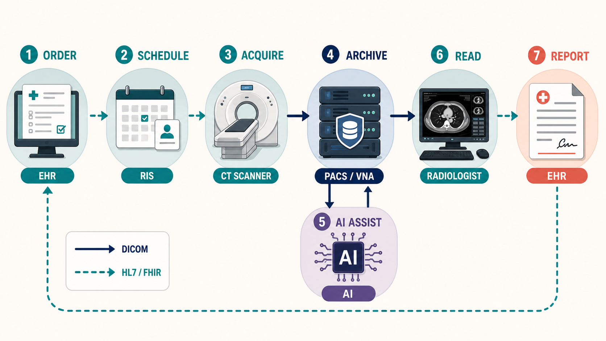

3 How Images Live in a Hospital
Sooner or later, everyone who works with medical images has the same first encounter: a folder containing three thousand files with meaningless names and no extensions, which no ordinary image viewer will open. That folder is a CT study, and the confusion it causes is the point of this chapter. A medical image is not a picture — it is a record: pixels wrapped in metadata about who was scanned, on what machine, with what settings, in what physical geometry, connected by identifiers to an order, a report, and a medical history, and moved between systems by protocols older than the web. Understanding that wrapping is not optional plumbing knowledge. It is the difference between a model that works and one that silently reads images upside down.
Chapter 2 described what the images are; this chapter describes how they live — the formats, the systems that store and move them, the loop a study travels from order to report, the parallel worlds of pathology, the laboratory, and the other imaging departments, and the governance that decides whether pixels can ever leave the building.
This chapter is where medical imaging most differs from mainstream computer vision. There is no imread() for a hospital. The metadata you are tempted to discard is what makes voxel values physically meaningful, defines the geometry your model assumes, and carries the patient identifiers that make careless data handling a legal event. Most catastrophic-but-silent bugs in medical imaging ML — inverted grayscale, mis-scaled intensities, shuffled slices, leaked protected health information — are metadata bugs, and every one of them is introduced below.
You use these systems every day — PACS, the worklist, dictation — without needing to know what happens underneath. What this chapter adds is the machinery’s-eye view: why the AI vendor keeps asking about “DICOM routing” and “HL7 feeds,” why research datasets arrive in strange formats, and why de-identification is harder than deleting the patient’s name. When an AI deployment stalls for months, the delay is almost always in this chapter, not in the model.
3.1 DICOM: the standard that runs radiology
Every scanner, viewer, and archive in every hospital on Earth speaks DICOM — Digital Imaging and Communications in Medicine — a standard first published in its modern form in 1993 and continuously extended since. Its longevity comes from covering three things at once: a file format for images and their metadata, a network protocol for moving them, and an information model describing how medical imaging is organized. Miss any of the three and the hospital stops making sense.
3.1.1 The information model: patient, study, series, instance
DICOM organizes everything into a four-level hierarchy:
- A patient has one or more studies — one study per imaging event (“CT chest with contrast, March 3rd”).
- A study contains series — coherent stacks of images acquired the same way. A CT study might hold a scout view, a non-contrast series, an arterial-phase series, and a reconstruction at a different slice thickness. An MRI study holds one series per sequence — the T1, T2, FLAIR, and diffusion volumes of Chapter 2.
- A series contains instances — individual DICOM objects, classically one file per slice. That is why one CT study is three thousand files: a 3D volume stored as a series of 2D instances, each carrying its own copy of the metadata.
Each level is identified by a globally unique identifier (UID) — long dotted-decimal strings that let any two systems agree they are discussing the same study without sharing a database. When you assemble a volume, the hierarchy is the contract: instances group into series by UID, and their spatial order comes from geometry tags — not from filenames, which are arbitrary.

3.1.3 More than images — and more than a file format
Two facts about DICOM surprise newcomers. First, not every DICOM object is an image: the standard defines Structured Reports (SR — measurements and findings as structured data), Segmentation objects (SEG — labeled voxel masks), RT Structure Sets (radiotherapy contours), presentation states (how an image was displayed), and even encapsulated PDFs. This matters for AI twice over: training labels increasingly arrive as SEG and SR objects, and a deployed model’s output usually must be one — that is how results appear inside the tools radiologists already use.
Second, DICOM is a network protocol. Devices (“application entities”) push images to each other with C-STORE, query archives with C-FIND, and retrieve with C-MOVE — a service model designed in the early 1990s and still how most scanners talk to most archives today. Its modern counterpart, DICOMweb, reappears below. The practical upshot: an AI system in a hospital is not “an app that opens files” — it is a network node that receives studies pushed to it and sends results back, speaking the same protocol as a scanner.
The tag-by-tag details live in Appendix D, a quick reference written for exactly the moments this chapter creates.
3.2 Research formats: NIfTI, NRRD and friends
Open any published medical-imaging ML paper and the data is usually not in DICOM. Researchers convert, for three good reasons: one volume becomes one file instead of a thousand; the geometry collapses to a single clean affine matrix instead of per-slice tags; and stripping the metadata down to geometry-only removes most identifying information in the same step. The formats you will meet:
- NIfTI (
.nii,.nii.gz) — the lingua franca, born in neuroimaging and now the default for volumetric ML datasets everywhere. One header, one voxel array, one affine mapping voxel indices to physical space. Read it with nibabel or SimpleITK. Its one famous trap: it stores two spatial transforms (the “qform” and “sform”), and tools disagree about which wins — the root of a whole genre of left–right-flip incidents. - NRRD (
.nrrd) — 3D Slicer’s favorite: a human-readable text header (open it in a text editor — a debugging luxury DICOM never grants) ahead of the raw data, with clean support for label maps and directional data. - MetaImage (
.mha/.mhd), Analyze (.hdr/.img— obsolete but haunting older datasets, with notoriously ambiguous orientation), and HDF5-based containers for large collections. - OME-TIFF and Zarr — the pyramidal, chunked formats of microscopy and pathology, built for the gigapixel whole-slide images of Chapter 19 that no single-array format can hold.
The standard conversion workhorse is dcm2niix, which handles the accumulated scanner quirks of two decades better than any hand-rolled script; SimpleITK and pydicom-based pipelines are the programmatic route. Two warnings deserve their own paragraph.
Conversion is lossy by design. The NIfTI file keeps geometry and pixels; it discards the acquisition parameters, timing, device identity, and clinical context. For training, that is often fine. For deployment, remember the asymmetry: your model may be trained on tidy NIfTI volumes, but a hospital will hand it live DICOM. The converter is not a preprocessing convenience — it is part of the product, with its own failure modes on data unlike your training distribution.
“Anonymized by conversion” is a hope, not a guarantee. Stripping the header does not touch identifying information inside the pixels — a point de-identification, below, takes up properly.
Every format in this section opens in the free viewers of Chapter 4; loading the same volume as DICOM and as NIfTI in 3D Slicer, and watching the metadata panel shrink, is the fastest way to internalize what conversion keeps and discards.
3.3 PACS, RIS, EHR and how they talk
A hospital’s imaging infrastructure is an ecosystem of systems with fifty years of accumulated acronyms. The cast:
- PACS (Picture Archiving and Communication System) — the archive and its reading workstations: where images live, and where radiologists view them. When people say “it’s in PACS,” they mean the pixels have arrived at their long-term home.
- RIS (Radiology Information System) — the department’s operational brain: scheduling, protocols, worklists, report management, billing. The RIS knows about studies; the PACS holds them.
- EHR (Electronic Health Record) — the patient’s overall chart, where the order originates and the report lands. Clinicians outside radiology usually see images through a viewer launched from here.
- VNA (Vendor Neutral Archive) — an enterprise archive consolidating imaging from radiology, cardiology, pathology, dermatology and beyond, in standard formats, decoupled from any single PACS vendor.
These systems speak two protocol families. Images move as DICOM. Everything else — orders, status updates, reports, demographics — moves as HL7: classically HL7 v2, a delimited text format from the 1980s (an ORM message places an order; an ORU message carries the report back) that remains the actual working plumbing of most hospitals, and increasingly FHIR, the modern REST/JSON API that exposes the same concepts as web resources like Patient, ImagingStudy, and DiagnosticReport.
Two bridges between the families are worth knowing by name:
- DICOM Modality Worklist (MWL) — the scanner queries the RIS for scheduled patients, and the technologist picks the patient from a list instead of typing a name. This single service is why DICOM headers are usually right — and why, when a study is acquired off-worklist in an emergency, they are sometimes wrong. Every downstream consumer of metadata, human or model, inherits this fact.
- DICOMweb — the web-native face of DICOM: QIDO-RS to search, WADO-RS to retrieve, STOW-RS to store, all over HTTPS with JSON. It is what zero-footprint viewers like OHIF (Chapter 4) expect to talk to, what cloud imaging platforms expose, and — not coincidentally — the interface most AI products and agents integrate against, because it turns a 1990s hospital protocol into an ordinary web API.
Where does an AI system plug into all this? Almost always as another node in the flow: a DICOM router or the PACS forwards a copy of qualifying studies to the model’s endpoint; the model computes; results return as DICOM objects (SR, SEG, or annotated secondary-capture images) pushed back into PACS, as worklist reprioritizations in the RIS, or as HL7/FHIR messages to the EHR. “Integration” — the word that consumes most of an imaging-AI deployment’s calendar — means wiring exactly these paths, with the hospital’s names, networks, and exception cases attached.
3.4 The loop: acquisition → storage → reading → report
Follow one contrast chest CT through a modern hospital, end to end — because every stage is both a place metadata is created and a place AI now intervenes.

- Order. A clinician places the order in the EHR; it reaches the RIS as an HL7 message carrying the indication — the reason for the exam that ought to accompany the study forever and, to every AI developer’s frustration, often arrives as free text or not at all.
- Protocol and schedule. A radiologist or protocol rules decide exactly how to scan (contrast? phases? slice thickness?). AI’s quietest foothold is already here: automated protocoling and dose optimization.
- Acquisition. The technologist pulls the patient from the modality worklist, scans, checks quality, and pushes the series to PACS via C-STORE. On modern scanners, AI is inside this step too — the deep-learning reconstruction of Chapter 13 and Chapter 12 runs before any human sees an image.
- Storage and routing. The archive registers the study; routing rules fan copies out — to the VNA, to prefetching (pulling the patient’s prior studies so the reader can compare), and to any subscribed AI endpoints. Triage models run here, within minutes of acquisition, and write urgency flags back to the worklist.
- Reading. The radiologist opens the study from a worklist — sorted by AI-adjusted priority in a growing number of departments — into a viewer that applies hanging protocols (automatic layout of series and priors). Detection and quantification aids surface as overlays; measurements land as structured data.
- Report. The radiologist dictates; speech recognition transcribes; increasingly, drafting models propose text from the images and prior report for the radiologist to edit. The signed report returns to the EHR as an HL7
ORUmessage. For critical findings, an auditable direct-communication step ensures the ordering clinician actually hears about the aneurysm, not merely receives a document. - After. Billing codes derive from the report; peer review and quality programs sample it; and — the loop’s least-solved segment — results follow-up systems chase the incidental nodule that the report recommended re-imaging in six months. Studies that never got read, recommendations that never got followed: this unglamorous tail is where imaging care actually fails most often, and where workflow AI may matter more than any detector.
Turnaround expectations calibrate the whole loop: minutes for a stroke code, an hour for emergency reads, a day or more for routine outpatient studies. When Chapter 11 and its siblings discuss triage products, this loop is the thing being re-ordered — and the reason a model’s latency and integration point matter as much as its AUROC.
3.5 Beyond radiology: pathology, the lab, and the other -ologies
Everything above described radiology’s infrastructure — the oldest and most standardized imaging pipeline in the hospital. But hospitals make images everywhere, and most of them never touch the radiology PACS. For an AI builder this is not trivia: which department owns an image determines what format it is in, what system it lives in, what identifiers link it to the patient, and whether it is realistically obtainable as training data at all. The uneven AI maturity across modalities in Chapter 2 traces directly back to this section.
3.5.1 Pathology’s parallel universe
The laboratory runs on its own operational brain, the LIS (Laboratory Information System) — pathology’s counterpart to the RIS and much of the EHR combined. Its workflow is physical before it is digital: a specimen arrives and is accessioned under a case number (not a study UID); a pathologist grosses it, photographing the intact tissue; tissue is embedded into blocks, sectioned onto slides, and stained; and only then — in laboratories that have digitized at all — does a whole-slide scanner turn glass into pixels. Every artifact along the way (gross photos, blocks, slides, scans) hangs off the LIS case, and the diagnosis it anchors is usually the diagnosis of record.
Digital pathology’s storage story diverges from radiology’s in three ways. Formats: most scanners write proprietary pyramidal formats — Aperio SVS, Hamamatsu NDPI, MIRAX and friends — readable through OpenSlide and Bio-Formats (the machinery behind QuPath in Chapter 4). A DICOM encoding for whole-slide images exists (Supplement 145) and adoption is growing, but the installed base remains overwhelmingly proprietary; “convert to DICOM or not” is a live architectural decision in every digitization project. Scale: at several gigabytes per slide and on the order of a million slides a year from a busy laboratory, full digitization means petabytes — which is why “pathology PACS” (usually called an image management system, IMS) is its own product category and why storage cost, not scanner cost, often decides the business case. Maturity: radiology went filmless two decades ago; most pathology departments worldwide still sign out on glass, with scanning reserved for tumor boards, consults, and research. Primary diagnosis from digital slides has been FDA-cleared since 2017, and the economics are shifting — but when Chapter 19 calls data access the field’s central bottleneck, this infrastructure gap is the reason.
3.5.2 The wider lab, and everyone else
Beyond anatomic pathology, the laboratory produces images that rarely leave their instruments: hematology analyzers photograph and pre-classify blood cells (some of the oldest deployed imaging AI in medicine), microbiology labs image culture plates for automated reading, and cytogenetics builds karyotypes from chromosome images. These live in the LIS or vendor middleware, speak HL7 results messages rather than DICOM, and are effectively invisible to enterprise imaging unless deliberately exported.
Meanwhile the other “-ologies” each grew a silo: cardiology runs its own PACS for echo and cath video; ophthalmology is notorious for proprietary device formats that resist even DICOM export (Chapter 17); endoscopy suites store video in dedicated documentation systems; and dermatology, wound care, and point-of-care ultrasound generate encounter-based images — captured on the spot, often on a phone or cart, with no order and no accession number, which means none of the clean metadata the modality worklist guarantees in radiology. The hospital’s answer to this sprawl is the enterprise imaging strategy built around the VNA introduced earlier: pull every department’s images into one governed archive, in standard formats where possible (DICOM has object types for photographs, ophthalmic imaging, and whole-slide images alike), linked to the right patient and encounter. For AI, enterprise imaging is quietly decisive — the multimodal models of Chapter 8 presuppose exactly the unified, well-identified archive that most hospitals are still assembling.
3.6 De-identification and data governance
Every dataset in Appendix A exists because someone solved the problem this section describes: patient data is protected by law — HIPAA in the United States, GDPR in Europe, and equivalents elsewhere — and imaging data is unusually hard to de-identify.
The metadata layer is the easy part, done carefully. DICOM headers are saturated with identifiers: names, record numbers, birth dates, accession numbers, the referring physician, the institution — plus UIDs and device serial numbers that enable linkage across studies even when names are gone. The standard itself defines how to strip them (the confidentiality profiles of DICOM PS3.15), and mature tools implement it: the RSNA CTP anonymizer, pydicom-based pipelines, and the de-identification stages of platforms like the ones behind TCIA. Naive approaches fail in predictable ways — private vendor tags carrying identifiers, dates shifted inconsistently across a patient’s studies (destroying the intervals that make longitudinal data useful), UIDs regenerated without preserving the study/series structure.
The pixel layer is the hard part. Identifying information lives inside the images: ultrasound and secondary-capture images routinely have the patient’s name burned into the pixels; scanned documents ride along in studies; whole-slide images carry a photograph of the physical slide — handwritten case number and all — as their embedded label and macro images, which serious pathology releases strip or redact; and — the famous case — a head CT or MRI contains the patient’s face, which modern software can reconstruct and match against photographs. Serious pipelines therefore add OCR-based burned-in-text detection and, for head imaging, defacing algorithms that blur or remove facial voxels while preserving the brain. Even then, careful releases treat re-identification risk as something to be managed, not eliminated — which is why many “public” datasets sit behind data-use agreements, credentialed access, and prohibitions on re-identification attempts rather than open links.
Governance is the process wrapper. Research use of clinical images runs through an IRB or ethics committee (with consent, or a waiver where re-consenting millions of historical studies is impracticable), data-use agreements bind recipients, and a hospital’s decision to share — or to run a vendor’s model — is ultimately a governance decision about risk. Two structural alternatives matter for AI specifically: keeping the data in place and bringing the compute to it (secure enclaves; federated learning, where models train across hospitals that never exchange images), and synthetic data, whose promise and limits Chapter 8 examines. For the engineer, the operational rule is simple and absolute: treat every DICOM file as containing PHI until a validated pipeline has proven otherwise — including the ones a colleague swears are already anonymized.
Try it yourself
The systems in this chapter sound abstract until you run them — and, unusually, you can run all of them on a laptop, free.
- Read a DICOM header. Install pydicom (
pip install pydicom) and load one of its bundled files, or download a study from the Imaging Data Commons or TCIA.print(dcmread(path))dumps every tag; findModality,PixelSpacing,RescaleIntercept, andPhotometricInterpretation— then display the pixels and apply the rescale yourself to land in Hounsfield units. - Break the slice order on purpose. Load a CT series, stack slices sorted by filename, and compare against the volume sorted by
ImagePositionPatient. On many studies they differ — a bug you will now never ship. - Convert and compare. Run
dcm2niixon the same series and open both the DICOM and the NIfTI in 3D Slicer (Chapter 4). Same voxels; note what vanished from the metadata panel. - Run your own hospital. Launch Orthanc — a superb open-source DICOM server — via Docker, push your sample study to it, and browse it through its web interface or point an OHIF viewer at its DICOMweb API. In twenty minutes you will have touched C-STORE, an archive, QIDO/WADO, and a zero-footprint viewer: the entire middle of this chapter, running on your machine.
3.7 The agentic outlook
This chapter is the agent’s tool surface. An autonomous imaging system does not experience the hospital as folders of files; it experiences QIDO-RS queries, WADO-RS retrievals, FHIR resources, and worklist states — precisely the interfaces catalogued above, which is why agent-era imaging infrastructure is converging on DICOMweb + FHIR as its API layer. Three implications follow. First, metadata literacy is agent competence: the modality tags, study descriptions, and worklist context that route studies are exactly the noisy signals an agent must weigh, cross-checked against pixels, before invoking any model (Chapter 2). Second, an agent is a node, not an app: it must be a well-behaved DICOM/HL7 citizen — receiving pushed studies, writing results back as SR and SEG objects humans will actually see, and never mutating the archive it reads. Third, governance binds agents tighter, not looser: an agent that queries archives autonomously needs auditable logs of every retrieval and every output, PHI-handling guarantees at least as strong as a human’s, and the fail-safe behaviors that Chapter 10 and Chapter 22 develop. The unglamorous plumbing of this chapter is, for agentic AI, the whole road.
3.8 Further reading
- The DICOM standard itself at dicom.nema.org — vast, but Part 3 (information objects) and Part 15 (de-identification profiles) reward targeted reading; Appendix D is this book’s condensed companion.
- The Orthanc Book — the best practical introduction to DICOM networking in existence, disguised as a server manual.
- HL7 FHIR documentation at hl7.org/fhir, especially the
ImagingStudyandDiagnosticReportresources. - Moore et al., “De-identification of medical images with retention of scientific research value,” RadioGraphics (2015) — the standard reference on imaging de-identification practice.
- Schwarz et al., “Identification of anonymous MRI research participants with face-recognition software,” NEJM (2019) — the paper that made defacing mandatory.